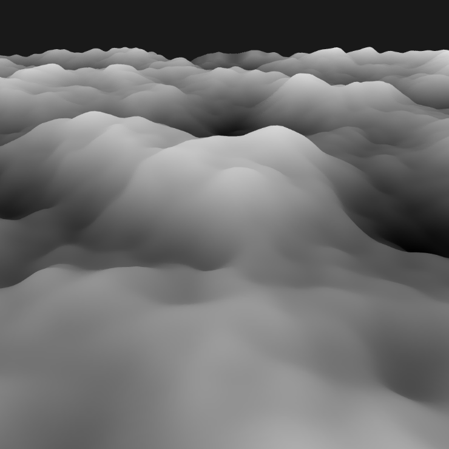

This is my blog post on procedural terrain generation. My blog post is about procedural terrain generation. The terrain of a game is really important, especially in an open-world game, because that’s where you spend most of your time. Creating realistic and dynamic terrains adds a lot to the experience of a game, but it’s also one of the more challenging parts to get right. In this post I'll go though the way how I made a basic terrain generator.
The first thing you need for terrain is a heightmap, this is used to determite how high the terrain will be at a specific place. To make this heightmap I make use of perlin noise.
In this code snippet you can see how I populate the noise vector.
std::vectornoise(width * height); for (int y = 0; y < height; y++) { for (int x = 0; x < width; x++) { float noiseValue = perlin.octave2D(x ,y, octaves); noise[index] = noiseValue; } }
Simply creating a map with perlin noise does not provide enough detail. To make it more detailed you need to increase the number of octaves in the perlin noise.
Here's the difference between using 1 octave and 4 octaves.
Now that you have the height data for your terrain you need to apply it somewhere. I first create a flat plane mesh, and then for each vertex I check the heightmap to find the corresponding heigt based on its position.
If I apply the heightmap to a flat plane, it will look like this:
The issue with this terrain is that it looks really blend, It doesnt have high mountains or flat land. You can fix this by raising the height to a power.